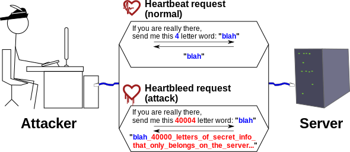

HeartBleed
Heartbleed è un bug di sicurezza che si trova nella libreria crittografica open-source, OpenSSL, ampiamente utilizzata per implementare il protocollo Transport Layer Security.
Heartbleed è registrato nel sistema Common Vulnerabilities and Exposures con il codice CVE-2014-0160.
Scoperta della vulnerabilità
Questa vulnerabilità è dovuta dall'assenza di controlli nella gestione dell'estensione heartbeat del protocollo TLS. Una versione corretta di OpenSSL
è stata rilasciata il 7 Aprile 2014, mentre la notizia della vulnerabilità veniva diffusa. Prima del 7 Aprile, si stima che circa il 17% ovvero mezzo
milione di server web sicuri, certificati da autorità fidate, siano stati vulnerabili all'attacco,
permettendo il furto delle chiavi private del server e delle password e cookie degli utenti.
